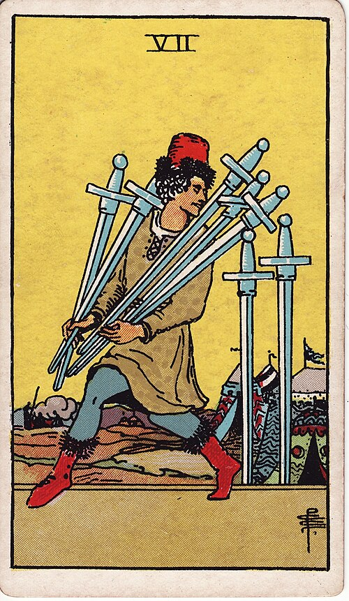

| Arcana | Minor |
| Suit | Swords |
| Element | Air |
| Attribution | Moon in Aquarius |
Seven of Swords
In shortSomething is being done quietly, and not quite straight.
Upright
This covers strategy, discretion and outright deception — and it does not always accuse you. Often you are the one being worked around. Where it sits well, it advises cleverness over confrontation, and acting alone rather than by committee.
Reversed
The cover is blown. A deception is exposed, a scheme unravels, or you decide to come clean before it gets discovered. It can also mean stopping a story you have been telling yourself for a long time.
The turn
Check what is being carried by the blade. Clever plans here tend to cut the planner.
Reading with your own deck?
Sage records the cards you actually pull, writes the reading, keeps every one, and shows you what keeps returning across them. Free, private, no account.